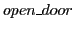

Next: Support for parallel programs Up: Platform specific libraries and Previous: Platform specific libraries and Contents Index
In example shown in fig:example:multiple:funcalls, main generates a random number and prints it before going further with other processing. In case, programmer knows she or he is not going to use
 again, the same address can be taken by  . Possibly one can also rewrite the program as shown in figure fig:example:memory:overlay.
. Possibly one can also rewrite the program as shown in figure fig:example:memory:overlay.
As we can see function
 takes a pointer to memory region, function pointer and variable number of argument to be supplied to the called function. When the function executed, instructions of the function, whose pointer is supplied as parameter, are brought to specific region of the memory mentioned in the argument. This avoids any memory write backs and provides faster processing. Also this reduces the amount of memory required for the applications [42].
takes a pointer to memory region, function pointer and variable number of argument to be supplied to the called function. When the function executed, instructions of the function, whose pointer is supplied as parameter, are brought to specific region of the memory mentioned in the argument. This avoids any memory write backs and provides faster processing. Also this reduces the amount of memory required for the applications [42].
In the tool we added support to handle memory overlays. For data overlay we treat each new memory overlay as new memory block allocation and old block as removal. The new instruction overlay and call to those instructions is treated as simple function call. This allows CBMC to handle memory overlays in simplest manner. In future work one can add support to verify the dangling pointers due to overlays.
ash 2012-09-13